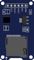
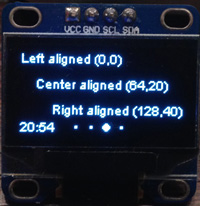

So far every part had its own wire, and the ESP32 only read or wrote its "voltage". But a display, a memory card or a GPS "talks": it exchanges numbers, text and commands. There are three standard languages for this: I2C, SPI and UART. In this lesson you learn all three from the ground up and build a real project with each one. This is the longest lesson in the chapter; take it section by section and test each section before moving on to the next.
🎯 After this lesson you can
- Say how many wires each protocol uses, how it works, and when to choose which
- Find any device's address with an I2C scanner and write text and numbers on an OLED display
- Read temperature and humidity with a DHT22 and show them on the OLED
- Write a CSV file to a microSD card and read it back
- Read the GPS's NMEA sentences, understand them, and get coordinates with TinyGPSPlus
🧰 Prerequisites and parts
- Lessons 3.1 (millis and pull-ups) and 2.2 (Serial Monitor)
- A 0.96-inch SSD1306 OLED display (I2C version, 4 pins)
- A DHT22 sensor (or its 3-pin module) + a 10 kΩ resistor
- A microSD card module (SPI) and a card of 32 GB or less
- A NEO-6M GPS module (for example the GY-NEO6MV2) with its antenna (optional; without it you still do this lesson's UART loopback exercise)
- Optional: a BME280 module (I2C, 3.3 V version) and one extra jumper wire for the UART loopback test



The big picture: why a "protocol"?
A protocol is an "agreement on how to talk": how many wires there are, who speaks first, how long each bit lasts, and how devices call each other. All three protocols in this lesson are serial: they send bits one after another on a single wire, not eight at a time on eight wires. That keeps the number of wires down.
UART is like a phone call between two people: each has a mouth (TX) and an ear (RX), and only those two talk to each other. I2C is like a classroom: one teacher (the master) and several students on one shared line; the teacher calls each student's name (address) and only that student answers. SPI is like a teacher who has a separate "raise your hand" wire (CS) to each student; it's faster because nobody's name has to be called, but every extra student needs one more wire.
| Feature | I2C | SPI | UART |
|---|---|---|---|
| Number of wires (not counting power) | 2: SDA, SCL | 3 + one per device: MOSI, MISO, SCK, CS | 2: TX, RX (crossed over) |
| Shared clock | Yes (SCL) | Yes (SCK) | No; both sides must use the same speed (baud rate) |
| Typical speed | 100 or 400 kbit/s | A few to tens of Mbit/s | 9600 to 115200 bit/s (common) |
| Number of devices | Dozens of devices on two wires | A few devices; one CS each | Only two devices |
| How a device is selected | A 7-bit address (for example 0x3C) | Pulling that device's CS wire low | Not needed; there are only two sides |
| ESP32 default pins | SDA=GPIO21, SCL=GPIO22 | VSPI: MOSI=23, MISO=19, SCK=18, CS=5 | Serial2 with explicit pins; in this lesson RX=GPIO16, TX=GPIO17 |
| Example parts | OLED, BME280, MPU6050, DS3231 RTC | SD card, TFT display, LoRa module | GPS, SIM (cellular) module, link to a computer |
I2C: two wires, dozens of devices
I2C (say "I-two-C" or "I-squared-C") has two wires: SDA for data and SCL for the clock. The ESP32 plays the master (the boss): only it can start a conversation, and it generates the clock. The devices (called slaves or targets) only answer when their address is called.
An I2C conversation, step by step
sequenceDiagram participant M as ESP32 (Master) participant O as OLED (0x3C) participant B as BME280 (0x76) M->>O: START + address 0x3C + write O-->>M: ACK (I am here) Note over B: address does not match, stays silent M->>O: data bytes O-->>M: ACK after each byte M->>O: STOP
First the ESP32 puts the address on the line. Every device hears it, but only the device with that address answers with an "ACK" bit ("yes, I'm here"). If nobody answers, the ESP32 sees a "NACK" and knows there's no device at that address. That trick is the basis of the "I2C scanner".
On I2C, no device ever "pushes" a wire up to 3.3 V; devices can only "pull" the wire down to GND (this is called "open-drain"). So a pull-up resistor (usually 4.7 or 10 kΩ) has to bring the wire back to 3.3 V when nobody is pulling it; the same idea as in lesson 3.1. The good news: almost every ready-made module (OLED, BME280 and so on) already has these resistors on board, so you usually don't need to add anything. This design also means that if two devices try to talk at the same time, there's no short circuit.
If you power an I2C module from 5V and its pull-ups are connected to that same 5 V, the SDA and SCL lines sit at 5 V and damage the ESP32. Always power the OLED and the BME280 from 3V3. Modules that really need 5 V require a level shifter (lesson 1.4).
The I2C scanner: the first step with any new module
Before any library, first make sure the ESP32 can "see" the device. This program calls every possible address one by one and prints the ones that answer.
// I2C scanner: which devices are on the bus?
#include <Wire.h>
void setup() {
Serial.begin(115200);
Wire.begin(21, 22); // SDA=21, SCL=22 (ESP32 defaults)
Serial.println("I2C scanner...");
}
void loop() {
int found = 0;
for (uint8_t addr = 1; addr < 127; addr++) {
Wire.beginTransmission(addr); // "is anyone at this address?"
uint8_t err = Wire.endTransmission();
if (err == 0) { // 0 = it answered (ACK)
Serial.printf("Found device at 0x%02X\n", addr);
found++;
}
}
if (found == 0) Serial.println("No I2C devices found. Check wiring!");
Serial.println("----");
delay(5000);
}
- The Wire library. Arduino's built-in I2C library. Nothing to install. The name comes from "wire" because I2C is also called "Two-Wire".
- Wire.begin(SDA, SCL). Starts the I2C bus on pins 21 and 22 and makes the ESP32 the master.
On the ESP32 almost any pin can do I2C (thanks to the GPIO matrix). 21 and 22 are the defaults, and an empty
Wire.begin()uses them too; but writing the pins out means that if you ever need different pins, you know where to change them. - A loop over every address. From 1 to 126.
An I2C address is 7 bits (0 to 127); address 0 is for "everyone" (the general call), and 127 and a few other addresses are reserved.
uint8_tmeans an 8-bit unsigned number (0 to 255). - Knocking on the door.
beginTransmissionprepares the address andendTransmissionactually sends it and returns the result. Without sending any data, we only ask "are you there?". This does no harm to any device. - A result of 0 means ACK. The address is printed in hexadecimal;
%02Xmeans "base 16, two digits, uppercase letters". Datasheets and libraries always write addresses in hex (0x3C), so we print them that way too, to compare them directly. Other error codes: 2 means NACK on the address (nobody there). - Report, then repeat every 5 seconds. Repeating lets you fix a wire while it runs and see the result without resetting.
The 0.96-inch OLED display (SSD1306)
This small display has 128 × 64 pixels and every pixel makes its own light (so there's no backlight, the contrast is excellent and it uses little power). Its driver chip is the SSD1306, and the 4-pin version works over I2C. The address is almost always 0x3C; some models become 0x3D if you move a resistor on the back of the board. (The back of the board sometimes says "0x78"; that's the same 0x3C shifted left by one bit, i.e. the 8-bit address. In code, always write 0x3C.)

Some OLEDs are GND VCC SCL SDA and some are VCC GND SCL SDA. Swapping VCC and GND can burn the module out. Before you connect it, read the labels next to the pins, not a photo from the internet.
Libraries: in Sketch › Include Library › Manage Libraries…, search for SSD1306 and install Adafruit SSD1306 by Adafruit (similar results such as "ESP8266 and ESP32 OLED driver for SSD1306" from ThingPulse use different commands and won't work with this lesson's code). During installation a window asks whether to also install the dependencies (Adafruit GFX Library and Adafruit BusIO); choose Install All. If you closed that window, install those two separately under exactly those names; otherwise you'll get the error Adafruit_GFX.h: No such file or directory. The SSD1306 library talks to the chip, and GFX provides the drawing tools (text, lines, rectangles, circles).
The screen's coordinate system
#include <Wire.h>
#include <Adafruit_GFX.h>
#include <Adafruit_SSD1306.h>
const int SCREEN_W = 128;
const int SCREEN_H = 64;
Adafruit_SSD1306 display(SCREEN_W, SCREEN_H, &Wire, -1); // -1 = no reset pin
int counter = 0;
void setup() {
Serial.begin(115200);
Wire.begin(21, 22);
if (!display.begin(SSD1306_SWITCHCAPVCC, 0x3C)) {
Serial.println("SSD1306 not found!");
while (true) delay(1000); // stop here
}
display.clearDisplay();
display.setTextColor(SSD1306_WHITE);
}
void loop() {
display.clearDisplay(); // 1) clear the buffer
display.setTextSize(1); // 6×8-pixel characters
display.setCursor(0, 0);
display.println("Hello ESP32!");
display.setTextSize(2); // 12×16-pixel characters
display.setCursor(0, 24);
display.print("n = ");
display.println(counter);
display.drawRect(0, 50, 128, 14, SSD1306_WHITE); // bar frame
display.fillRect(2, 52, (counter % 25) * 5, 10, SSD1306_WHITE); // progress bar
display.display(); // 2) send the buffer to the screen
counter++;
delay(500);
}
- Three libraries. Wire for I2C, GFX for drawing, SSD1306 for the display itself. This division of labor means you can use the same GFX drawing commands on dozens of other displays too (color TFTs and so on).
- Creating the display object. The screen size, the I2C bus (
&Wire) and the reset pin (-1means there isn't one). The&sign means "the address of" the Wire object; we're telling the library which bus to use (the ESP32 has two I2C buses). 4-pin modules have no reset pin. - Start-up with error checking.
begintakes the address0x3C;SSD1306_SWITCHCAPVCCmeans the module's own internal circuit generates the panel's high voltage. If it fails, it prints a message and stops in an endless loop. Without this check, the program would carry on with a missing display and you'd just see a black screen with no clue.beginalso reserves 1 KB of RAM for the buffer (128 × 64 ÷ 8). - Text color. The SSD1306 is monochrome:
SSD1306_WHITEmeans a lit pixel (the actual color is white, blue or yellow, depending on the model). GFX's default text color may be the same as the background; without this line the text is invisible. Once in setup is enough. - Step 1: clear the buffer. All drawing commands paint on a "canvas" in the ESP32's RAM, not directly on the screen. If you don't clear it, the new number is drawn on top of the old one and becomes a mess.
- Text with a size and a position.
setTextSizesets the size,setCursor(x, y)the top-left corner of the first character, andprint/printlnthe text or number itself. Just like Serial; because the display class inherits from Print, it has the same print and println. We chose y=24 to leave a gap below the first line (8 pixels tall). - Shapes.
drawRect(x, y, width, height, color)draws a frame andfillRecta filled rectangle. The bar's width,(counter % 25) * 5, goes from 0 to 120 pixels.%is the remainder of a division, so after 24 the number returns to 0 and the bar fills up again from the start. 120 + 2 is less than the frame's inner width, so the bar never pokes out of the frame. - Step 2: display(). Sends the whole buffer to the display over I2C. Forgetting this line is the most common reason for a "blank screen". Sending 1024 bytes at 400 kHz takes about 25 milliseconds, so it's best to make all your changes in the buffer first and call display once.
In Wokwi, add the Adafruit SSD1306 library from the Library Manager tab (it brings GFX along; if you see an Adafruit_GFX error, add that one separately too). You can also run the I2C scanner code on this circuit to see 0x3C.
DHT22: temperature and humidity (and an honest confession)
The DHT22 (also sold as the AM2302) measures temperature from −40 to 80 °C with an accuracy of about ±0.5 °C, and relative humidity from 0 to 100% with an accuracy of about 2 to 5%. It's cheap and popular.
In this course's outline the DHT22 sits next to I2C, because it's usually used together with an I2C OLED. But we have to be honest: the DHT22 uses its own proprietary single-wire protocol, which is neither I2C nor Dallas's 1-Wire protocol. The ESP32 sends a start pulse and the sensor answers with 40 bits, where each bit's value is set by the length of its HIGH pulse (about 26 to 28 microseconds = 0, about 70 microseconds = 1). The library measures these timings precisely. The practical result: the DHT22 needs a wire of its own and can't share SDA/SCL with other devices.
If you want an environmental sensor that really is I2C, look at the BME280: temperature, humidity and air pressure, more accurate and faster, on the same two wires as the OLED at address 0x76 or 0x77. (Careful: the cheaper BMP280 looks similar but has no humidity sensor.)
The bare four-pin DHT22's pins (from the left, with the grille facing you): 1 = VCC, 2 = DATA, 3 = not connected (NC), 4 = GND. Like I2C, the DATA line is "open-drain" and needs a 10 kΩ pull-up resistor between DATA and VCC. The 3-pin modules (the white sensor on a small board) already have that resistor; on the back of the board you'll see a tiny SMD resistor marked 103 (10 kΩ) or 472 (4.7 kΩ), so don't add an external one. Module pin orders vary (+ out −, VCC DATA GND, or even − + S); read the labels on the board. The DHT22 works from 3.3 to 6 V; we power it from 3V3 so the DATA line never goes above 3.3 V.
#include <DHT.h>
const int DHT_PIN = 13;
DHT dht(DHT_PIN, DHT22); // sensor type: DHT22 (AM2302)
void setup() {
Serial.begin(115200);
dht.begin();
}
void loop() {
delay(2000); // DHT22: at most one reading every 2 seconds
float h = dht.readHumidity();
float t = dht.readTemperature(); // Celsius
if (isnan(h) || isnan(t)) {
Serial.println("DHT read failed!");
return; // skip this round
}
Serial.printf("T=%.1f C H=%.1f %%\n", t, h);
}
- The DHT library. In the Library Manager, search for
DHT22and install DHT sensor library by Adafruit. The dependencies window suggests Adafruit Unified Sensor; click Install All. (Related libraries such as "DHT sensor library for ESPx" or "DHTesp" use different commands; don't pick those.) Implementing the protocol's microsecond timing yourself isn't easy; a well-established library does it for you. - A sensor object on GPIO13. We tell it the sensor type is
DHT22. The DHT11 and DHT22 use different data formats; the wrong type means meaningless numbers. GPIO13 is this course's fixed DHT22 pin: GPIO4 stays reserved for the status LED, so if you still have the LED from lesson 3.1 on your breadboard, you can leave it where it is. - A 2-second wait. The DHT22 takes a new measurement every 2 seconds. Reading faster either fails or repeats the previous number. (The library itself also answers reads less than 2 seconds apart with the previous value.)
- Read humidity and temperature. Both are
float(decimal numbers).readTemperature(true)gives Fahrenheit; with no argument it's Celsius. - Check for NaN. If a reading fails, the library returns the special value
NaN(Not a Number) instead of a number.isnandetects it andreturnskips the rest of loop. Without this check,nanwould end up on the screen and in the log, or turn every calculation into NaN. A professional rule: validate every sensor number before you use it. - Print with one decimal place.
%.1fmeans a decimal number with one digit after the point. The sensor is accurate to about half a degree; printing 25.3471 degrees would only show false precision.
An occasional error is normal (the protocol is sensitive to timing). If every reading fails, look at the troubleshooting table below.
Project: a mini weather station (DHT22 on the OLED)
// Mini weather station: DHT22 on an OLED
#include <Wire.h>
#include <Adafruit_GFX.h>
#include <Adafruit_SSD1306.h>
#include <DHT.h>
Adafruit_SSD1306 display(128, 64, &Wire, -1);
DHT dht(13, DHT22);
unsigned long lastRead = 0;
void showMessage(const char *msg) {
display.clearDisplay();
display.setTextSize(1);
display.setCursor(0, 0);
display.println(msg);
display.display();
}
void setup() {
Serial.begin(115200);
Wire.begin(21, 22);
if (!display.begin(SSD1306_SWITCHCAPVCC, 0x3C)) {
Serial.println("OLED not found!");
while (true) delay(1000);
}
display.setTextColor(SSD1306_WHITE);
dht.begin();
showMessage("Waiting for DHT22...");
}
void loop() {
if (millis() - lastRead < 2000) return; // 2 seconds haven't passed yet
lastRead = millis();
float t = dht.readTemperature();
float h = dht.readHumidity();
if (isnan(t) || isnan(h)) {
showMessage("DHT22 read error!");
Serial.println("DHT22 read error");
return;
}
display.clearDisplay();
display.setTextSize(1);
display.setCursor(0, 0);
display.println("Temperature");
display.setTextSize(2);
display.setCursor(0, 12);
display.printf("%.1f C", t);
display.setTextSize(1);
display.setCursor(0, 36);
display.println("Humidity");
display.setTextSize(2);
display.setCursor(0, 48);
display.printf("%.1f %%", h);
display.display();
Serial.printf("T=%.1f C H=%.1f %%\n", t, h);
}
- Four libraries together. The same libraries as the two previous programs. This is how projects are usually combined on a microcontroller: the includes and objects side by side, the setups one after another, the loops merged together.
- Two objects: the display and the sensor. This time we wrote the numbers directly (128, 64, 13). Just to keep it short; in a bigger project, named constants are better.
- The showMessage helper function. Shows a short piece of text at the top of the screen.
const char *msgmeans "a piece of constant text". The "please wait" message and the "error" message both need exactly this; one function, two uses. Showing errors on the device itself matters, because the finished device won't be connected to a computer where you can watch Serial. - Timing with millis and return. If 2 seconds haven't passed, leave loop immediately. This is a short form of the millis pattern from lesson 3.1: a "guard at the door". loop stays free, and later you can add a button or another task before this line.
- Read and validate. On an error, show a message on the OLED and on Serial. The screen must not show an old number as if it were fresh; the user needs to know the sensor has a problem.
- The screen layout. A small title (size 1) and a big number (size 2) for the temperature at the top and the humidity at the bottom.
display.printfworks like Serial.printf. We worked out the y coordinates: the title at y=0 (8 tall), the number at y=12 (16 tall, down to y=28), the second title at y=36, the second number from y=48 to y=64, exactly the bottom edge of the screen. Always check that the heights add up to 64 or less. - A serial report. The display is for the user; Serial is for you while debugging.
GFX's default font has a small circle at position 247. Instead of "%.1f C" you can write: display.printf("%.1f", t); display.write(247); display.print("C");.
Add these in Wokwi's Library Manager: Adafruit SSD1306 and DHT sensor library (and, if you see errors, Adafruit GFX Library and Adafruit Unified Sensor). Wokwi's DHT22 doesn't need a pull-up resistor. Click it and change the temperature and humidity with the sliders. Its data pin is called SDA in Wokwi, but don't be fooled: it isn't I2C.
Two devices on one bus: adding a BME280
Here's the real magic of I2C: a second device needs no new pins. The BME280 connects to the very same SDA and SCL wires as the OLED (on a breadboard, just put both modules' SDA pins in the same row, and the same for SCL). The ESP32 talks to each one by its address: the OLED at 0x3C, the BME280 at 0x76 (or 0x77, depending on the module). Like two flats in one building: one street, two door numbers. This part is optional; if you have a BME280, it's the more accurate replacement for the DHT22.
Library: in the Library Manager, search for BME280 and install Adafruit BME280 Library (click Install All for its dependencies).
// Two devices on one I2C bus: OLED (0x3C) + BME280 (0x76)
#include <Wire.h>
#include <Adafruit_GFX.h>
#include <Adafruit_SSD1306.h>
#include <Adafruit_BME280.h>
Adafruit_SSD1306 display(128, 64, &Wire, -1);
Adafruit_BME280 bme;
void setup() {
Serial.begin(115200);
Wire.begin(21, 22); // one bus for both devices
if (!display.begin(SSD1306_SWITCHCAPVCC, 0x3C)) Serial.println("OLED not found!");
if (!bme.begin(0x76, &Wire)) Serial.println("BME280 not found! Try 0x77");
display.setTextColor(SSD1306_WHITE);
}
void loop() {
float t = bme.readTemperature(); // degrees Celsius
float h = bme.readHumidity(); // %
float p = bme.readPressure() / 100.0; // Pa -> hPa
display.clearDisplay();
display.setTextSize(1);
display.setCursor(0, 0);
display.printf("T: %.1f C\nH: %.1f %%\nP: %.0f hPa", t, h, p);
display.display();
Serial.printf("T=%.1f C H=%.1f %% P=%.0f hPa\n", t, h, p);
delay(2000);
}
- The BME280 library. One more include; the OLED libraries stay as they were.
Each device has its own library, but they all use the same
Wirebus underneath. - Two objects. The display and the sensor.
Both are given the same
Wirebus; the address is what tells them apart. - One Wire.begin for everyone. The bus is started once; every device on it shares it.
- Each device starts with its own address. If the BME280 isn't found, the message suggests the other address. Many BME280 boards use 0x76, some use 0x77. The scanner tells you which one yours has. We print an error instead of stopping, so you can still see which of the two devices is missing.
- Three readings. Temperature, humidity, and pressure converted from pascals to hectopascals (hPa, the unit on weather reports: about 1013 at sea level). Unlike the DHT22, the BME280 doesn't need 2 seconds between reads, and it gives air pressure too; you can use it for weather trends or even altitude.
- Three lines on the OLED.
\ninside printf starts a new line on the display. The same clear → draw → display cycle as before. The ESP32 just switched from talking to 0x76 to talking to 0x3C, and neither device minded.
At the time of writing Wokwi has no BME280 part, so try this one on real hardware.
SPI: fast, with a select wire for each device
SPI has four wires:
- SCK (clock): generated by the ESP32; one tick per bit.
- MOSI (Master Out, Slave In): data from the ESP32 to the device.
- MISO (Master In, Slave Out): data from the device to the ESP32.
- CS (Chip Select, sometimes SS): when the ESP32 pulls this wire LOW, it means "I'm talking to you". Every device has its own separate CS.
Because data travels both ways at the same time on two separate wires (full-duplex) and no addressing is needed, SPI is much faster than I2C. That's why memory cards and color displays (which move a lot of data) use SPI. The classic ESP32 has two free SPI buses: VSPI (the Arduino default, on pins 18, 19, 23 and 5) and HSPI.
The microSD card module
1) Module voltage: an SD card is 3.3 V only. The common blue modules (with an AMS1117 regulator chip and a 74LVC125 level shifter on board) want 5 V on their VCC input; if you give them 3V3, not enough voltage is left after the regulator and the card works sometimes and sometimes not. Simple modules without a regulator must get 3V3, and 5 V burns out both the module and the card. Look at the module's board: does it have a three-pin regulator chip? → 5V. No? → 3V3.
2) Format: the ESP32's SD library needs a FAT32 (or FAT16) card. Cards of 64 GB and up usually come formatted as exFAT and don't work. The easiest way: a 4 to 32 GB card, formatted as FAT32 with the official SD Card Formatter tool.
3) CS: the CS pin number in the code must be exactly the pin the CS wire is connected to (GPIO5 here).
// Logging data to a microSD card over SPI (VSPI)
#include <SPI.h>
#include <SD.h>
const int SD_CS = 5; // CS; the rest: SCK=18, MISO=19, MOSI=23
const char *LOG_FILE = "/log.csv";
void setup() {
Serial.begin(115200);
if (!SD.begin(SD_CS)) {
Serial.println("SD mount failed! (wiring, CS, FAT32?)");
while (true) delay(1000);
}
uint8_t type = SD.cardType();
if (type == CARD_NONE) {
Serial.println("No SD card inserted");
while (true) delay(1000);
}
Serial.printf("Card size: %llu MB\n", SD.cardSize() / (1024 * 1024));
if (!SD.exists(LOG_FILE)) { // no file yet? write the header
File f = SD.open(LOG_FILE, FILE_WRITE);
f.println("millis,value");
f.close();
}
File f = SD.open(LOG_FILE, FILE_APPEND); // add to the end of the file
if (f) {
f.printf("%lu,%d\n", millis(), 42);
f.close(); // closing = really saving
Serial.println("Line appended.");
}
f = SD.open(LOG_FILE, FILE_READ); // read the whole file
Serial.println("---- log.csv ----");
while (f.available()) Serial.write(f.read());
f.close();
}
void loop() {}
- Two built-in libraries. SPI for the bus and SD for the FAT file system. Both come installed with the ESP32 core. No separate installation needed. Be careful not to install the Arduino-specific "SD" library (from the Library Manager); it can get mixed up with the ESP32 version.
- The CS pin and the file name. On the ESP32, the file name must start with
/. The ESP32's SD library wants the full path from the root of the card;"log.csv"without the slash gives an error. The CSV extension means "comma-separated values", which Excel and Google Sheets open directly. - SD.begin(CS). Starts the default SPI bus (18/19/23), talks to the card, and "mounts" the file system. If it fails, we put the three main suspects in the message: wiring, CS and format. A good error message is half the troubleshooting.
- Card type and size.
cardTypegives the type (MMC, SD, SDHC) andcardSizethe size in bytes (a 64-bit number; that's why it's%llu). Seeing the right size (for example about 15,000 MB for a 16 GB card) proves the SPI link is completely healthy. - New file? Write a header. If the file doesn't exist, it's created with
FILE_WRITEand the first line (the column names) is written. On the ESP32,FILE_WRITEoverwrites an existing file from the start (it erases it). That's why we only use it when the file doesn't exist yet. - Append one line.
FILE_APPENDopens the file and adds to its end. The CSV line: the time and a sample value (42).if (f)means "if the file opened". In a real logger you'd write the DHT22 temperature instead of 42 (exercise 2).close()is essential: the data first collects in a RAM buffer and is only really written to the card on close (orflush). Power loss before close = lost data. - Read and print the whole file. As long as there are bytes left (
available), read one and send it to Serial unchanged. This proves the write really happened.Serial.writesends the byte exactly as it is (unlike print, which turns a number into text). - An empty loop. All the work was done once in setup. Every time you press the EN button, a new line is added.
This output is from the second run: the first time you see only one line of data, and every time you press EN another line is added. The millis number is about the same each time, because the line is always written a few hundred milliseconds after power-up. Put the card in your computer and open log.csv to see it with your own eyes.
Wokwi has a virtual microSD card. In the simulator we connected the module's VCC to 3V3 (the virtual card has no regulator). No library is needed; SD and SPI are built in.
UART: the oldest and simplest
You've been using UART since day one: Serial.print travels over UART0 (pins TX0=GPIO1 and RX0=GPIO3) to the board's USB chip and from there to the computer. UART has no shared clock; instead, both sides agree on a speed (the baud rate) in advance, for example 9600 bits per second. Each byte is wrapped in a start bit and a stop bit so the receiver knows where it begins and ends.
8N1 format: 1 start bit (LOW), 8 data bits, no parity bit (N), 1 stop bit (HIGH). If the two sides use different speeds, the receiver samples the bits at the wrong moments and sees garbled characters.The TX (transmitter) of one device must go to the RX (receiver) of the other, and vice versa. If you connect TX to TX, it's like two people talking mouth to mouth: neither one hears anything. This "crossover" is the most common UART mistake.
Serial2: a free UART for modules
The classic ESP32 has three UARTs: Serial (UART0, busy with USB), Serial1 and Serial2. Thanks to the GPIO matrix, each UART can be routed to almost any pin. Many boards print RX2 and TX2 next to GPIO16 and GPIO17, and most tutorials use those; we also use Serial2 on 16 and 17 for the GPS.
In core 3, if you call Serial2.begin(9600) without pins, the classic ESP32's default is GPIO4 and GPIO25, not 16 and 17 (Serial1's default is GPIO26 and GPIO27). This change was made to stay clear of the PSRAM pins on WROVER modules. Old code that gives no pins and assumes the GPS is on 16/17 receives no data at all on core 3. So always write all four arguments:
Serial2.begin(9600, SERIAL_8N1, 16, 17); // baud, format, RX, TX
- Four arguments. A speed of 9600, the 8N1 format, the ESP32's RX pin (16) and the ESP32's TX pin (17). The order is "RX first, then TX", written from the ESP32's point of view. 9600 is the NEO-6M's factory default speed. (On WROVER modules, GPIO16 and 17 are connected to the PSRAM; there, choose 4 and 25, for example, and change the wiring too.)
Try UART with no module at all: a loopback test
Before you buy or wire a GPS, you can see UART working with a single jumper wire. Connect GPIO17 (TX2) straight to GPIO16 (RX2). Now whatever Serial2 says, Serial2 also hears; like talking into a tube whose other end is at your own ear. This works in Wokwi too, so it's a great first UART exercise.
// UART loopback: Serial2 talks to itself (one wire: GPIO17 -> GPIO16)
const int RX2_PIN = 16;
const int TX2_PIN = 17;
unsigned long lastSend = 0;
int counter = 0;
void setup() {
Serial.begin(115200);
Serial2.begin(9600, SERIAL_8N1, RX2_PIN, TX2_PIN);
Serial.println("Loopback test: GPIO17 -> GPIO16");
}
void loop() {
if (millis() - lastSend >= 1000) { // send once a second
lastSend = millis();
counter++;
Serial2.printf("hello %d\n", counter); // out through TX2...
}
while (Serial2.available()) { // ...and back in through RX2
Serial.write(Serial2.read()); // show it on the computer
}
}
- Serial2 on 16 and 17. The same four arguments as above: speed, format, RX, TX. Exactly the line you'll use for the GPS, so this test also checks your setup code.
- Send a numbered message every second.
Serial2.printfworks likeSerial.printf, but the text leaves through GPIO17. The number changes each time, so you can see that each line is a fresh message and not something stuck on the screen. - The bridge from the GPS section. Every byte that arrives on RX2 is passed to the Serial Monitor.
If you see
hello 1,hello 2..., the bytes really made the trip over the wire and back.
In Wokwi the loopback wire goes from the board's pin 17 to its own pin 16. Try the experiments below here too.
1) Pull out the GPIO17 → GPIO16 wire while it runs: the messages stop, but the program doesn't crash. 2) Change the speed in Serial2.begin to 4800 and upload: it still works, because both ends are the same UART. 3) Now set the speed in Serial2.begin back to 9600, send with Serial2 and receive with Serial1: add Serial1.begin(4800, SERIAL_8N1, 26, 14);, move the wire so it goes from GPIO17 to GPIO26, and read Serial1 instead of Serial2. With 9600 on one side and 4800 on the other you'll see garbled characters: the mismatched-baud problem from the troubleshooting table, seen with your own eyes. (GPIO26 and GPIO14 are free in this lesson; after the test, remove the wire.)
What should you see?
- Step 1: when you pull the wire, the
hellolines stop (you may see a stray symbol or two from the floating pin). Plug it back in and it carries on, but the number jumps, for example fromhello 7tohello 12: the messages sent in between are lost, they aren't stored anywhere. - Step 2: at 4800 the output is exactly as before (
hello 1,hello 2...), because the sender and receiver are one UART at one speed. - Step 3: instead of
hello Nyou see a few garbled symbols every second, something like this (the symbols differ every time):
Mismatch test: 9600 -> 4800 �f��x ��f� �x��f
- To be sure, change 4800 to 9600 in the answer code and upload again: you should see clean
hello 1,hello 2... again. That proves the problem was only the speed, not the wire. - If nothing at all arrives in step 3, check the wire: it must go from GPIO17 to GPIO26, not to GPIO16.
Full answer with explanation
Steps 1 and 2 need no new code (it is still UART_Loopback). The complete code for step 3:
// Step 3: Serial2 sends at 9600, Serial1 listens at 4800 (wire: GPIO17 -> GPIO26)
unsigned long lastSend = 0;
int counter = 0;
void setup() {
Serial.begin(115200);
Serial2.begin(9600, SERIAL_8N1, 16, 17); // sender: TX2 = GPIO17
Serial1.begin(4800, SERIAL_8N1, 26, 14); // receiver: RX1 = GPIO26, wrong speed on purpose!
Serial.println("Mismatch test: 9600 -> 4800");
}
void loop() {
if (millis() - lastSend >= 1000) { // send once a second, as before
lastSend = millis();
counter++;
Serial2.printf("hello %d\n", counter);
}
while (Serial1.available()) { // read from Serial1 now, not Serial2
Serial.write(Serial1.read());
}
}
- Two separate UARTs at two speeds. Serial2 sends at 9600 from GPIO17; Serial1 listens at 4800 on GPIO26 (its TX, GPIO14, isn't used). In steps 1 and 2 the sender and receiver were the same UART, so their speeds always matched. Only with two separate UARTs can you really see a speed mismatch.
- Sending, as before. The same
hello Nevery second. The sender hasn't changed, so any garbage you see is caused only by the receiving side. - Listening with Serial1. Every byte Serial1 receives goes to the Serial Monitor unchanged. The receiver assumes every bit lasts twice as long as it really does, so it mixes the bits up: fewer bytes, and meaningless ones.
This time the wire goes from the board's pin 17 to its own pin 26. After you've seen the garbled symbols, change 4800 to 9600 and run it again.
The NEO-6M GPS module
The GY-NEO6MV2 module has a u-blox NEO-6M chip, a square ceramic antenna, a backup battery or capacitor (to remember satellite information) and an LED. Its output on the UART is plain text: several NMEA "sentences" every second.
To get the position, the ESP32 only listens. So the GPIO17 → module RX wire is optional (you need it for advanced settings such as changing the speed or the update rate).
Step 1: see the raw sentences
// Viewing the raw NMEA sentences from the GPS
const int GPS_RX = 16; // ESP32 RX2 ← GPS module TX
const int GPS_TX = 17; // ESP32 TX2 → GPS module RX
void setup() {
Serial.begin(115200); // USB to the computer
Serial2.begin(9600, SERIAL_8N1, GPS_RX, GPS_TX); // UART2 to the GPS
Serial.println("Waiting for NMEA...");
}
void loop() {
while (Serial2.available()) { // whenever a byte arrives from the GPS
Serial.write(Serial2.read()); // pass it unchanged to the Serial Monitor
}
}
- Two UARTs at two speeds. Serial at 115200 to the computer and Serial2 at 9600 to the GPS. Each UART has its own speed. The module decides the GPS speed (9600); we decide the USB speed. Because the computer side is faster, no data falls behind.
- A simple bridge. As long as there's a byte in Serial2's receive queue, read it and send it to Serial.
while(notif) so that every byte that has arrived is emptied in one pass. This "bridge" program is the best debugging tool for any UART module: first check whether the module is talking at all.
(A made-up example; the positions and checksums aren't real.) If the module hasn't found any satellites yet, the sentences arrive with empty fields between the commas; for example $GPGGA,083559.00,,,,,0,00,99.99,,,,,,*6A. That means the link is fine and you just have to wait.
Dissecting a GGA sentence
Let's take apart the classic example from the NMEA documentation, field by field:
| # | Field | Value | Meaning |
|---|---|---|---|
| 0 | Sentence type | $GPGGA | GP = the GPS system, GGA = "position data" (Global Positioning System Fix Data) |
| 1 | UTC time | 123519 | 12:35:19 universal time (add your time zone offset: for example, subtract 5 hours for New York or Toronto in winter, or add 1 hour for Berlin or Paris in winter) |
| 2 | Latitude | 4807.038 | Format ddmm.mmm: 48 degrees and 07.038 minutes |
| 3 | Hemisphere | N | North (S = south) |
| 4 | Longitude | 01131.000 | Format dddmm.mmm: 011 degrees and 31.000 minutes |
| 5 | East/West | E | East (W = west) |
| 6 | Fix quality | 1 | 0 = no position, 1 = normal GPS, 2 = DGPS |
| 7 | Number of satellites | 08 | 8 satellites used in the calculation |
| 8 | HDOP | 0.9 | Horizontal error factor; the lower the better (under 2 is good) |
| 9-10 | Altitude | 545.4,M | 545.4 meters above mean sea level |
| 11-12 | Geoid separation | 46.9,M | The difference between the Earth's ellipsoid and sea level at this point |
| 13-14 | DGPS data | Empty | Age of the differential correction and the station ID; not used here |
| — | Checksum | *47 | The XOR of all characters between $ and *, in hex. If it doesn't match, the sentence arrived damaged and is thrown away. |
NMEA gives degrees and minutes, but maps want decimal degrees. There are 60 minutes in a degree:
Latitude: 48 + 07.038 ÷ 60 = 48 + 0.1173 = 48.1173° · Longitude: 11 + 31.000 ÷ 60 = 11.5167°.
For S or W, the number becomes negative. A common mistake: reading 4807.038 as 48.07 degrees; that moves your position by several kilometers. The TinyGPSPlus library does this conversion for you.
Step 2: TinyGPSPlus, automatic parsing
The TinyGPSPlus library (by Mikal Hart; in the Library Manager, search for TinyGPSPlus and install TinyGPSPlus by Mikal Hart; it has no dependencies) takes the characters one at a time, recognizes the sentences, checks the checksum, and hands you ready-to-use numbers.
#include <TinyGPSPlus.h>
TinyGPSPlus gps;
unsigned long lastPrint = 0;
void setup() {
Serial.begin(115200);
Serial2.begin(9600, SERIAL_8N1, 16, 17);
}
void loop() {
while (Serial2.available()) {
gps.encode(Serial2.read()); // feed every character to the parser
}
if (millis() - lastPrint >= 1000) {
lastPrint = millis();
if (gps.location.isValid()) {
Serial.printf("Lat=%.6f Lon=%.6f Sats=%lu Alt=%.1fm\n",
gps.location.lat(), gps.location.lng(),
(unsigned long)gps.satellites.value(), gps.altitude.meters());
} else {
Serial.printf("No fix yet... sats=%lu chars=%lu\n",
(unsigned long)gps.satellites.value(), (unsigned long)gps.charsProcessed());
}
if (millis() > 5000 && gps.charsProcessed() < 10) {
Serial.println("No data from GPS: check TX->RX wiring and baud!");
}
}
}
- The library and the gps object.
One object holds all the data:
gps.location,gps.satellites,gps.altitude,gps.time,gps.speedand more. - Feeding the parser. Every byte that arrives is handed to
gps.encode. This loop has to run constantly and quickly. If you put adelay(1000)in loop, the UART receive queue (about 128 to 256 bytes) fills up and part of the sentences get lost. That's why we timed the printing with millis, not delay. - A report every second. The millis pattern. By default the GPS gives a position once per second; printing faster is pointless.
- If the position is valid.
isValid()tells you whether a correct position has been received yet.lat()andlng()give decimal degrees (negative for S and W);%.6fmeans six decimal places, about 10 centimeters. The NEO-6M's real accuracy is about 2.5 meters, but six decimal places is the common standard for maps. Lines 19 to 21 are really one statement, split over three lines for readability. - No fix yet. Shows the number of satellites seen and the number of characters processed. If "chars" keeps going up, the wiring is correct and you just have to wait. These two numbers separate two completely different problems.
- A wiring warning. If fewer than 10 characters have arrived after 5 seconds, the problem is the wiring or the speed. A specific error message beats silence. The most common cause: TX and RX swapped.
GPS satellite signals are extremely weak and don't pass through a concrete roof. Put the antenna next to an open window or, better, outside under open sky (ceramic side of the antenna facing up). The first start (a cold start) can take anywhere from about half a minute in ideal conditions to several minutes or more, because the module has to download the satellite list from the signal itself. Later starts (if the backup battery is charged) are much faster. On most GY-NEO6MV2 modules, the LED starts blinking once per second when it gets a fix. Indoors at your desk? You'll most likely never get a fix. That doesn't mean the module is broken.
Wokwi has no official NEO-6M part. You can find a few user-made projects in Wokwi that use a "custom chip" (a chip written in C) to generate fake NMEA sentences; these aren't official and their quality isn't guaranteed. This course's recommendation: do the GPS section with real hardware. To practice parsing without hardware, you can put the sample sentence above in your code as a string and feed it to gps.encode() one character at a time.
Helpful video
- Watch the opening part about I2C bus basics (master, addresses, pull-ups) carefully and compare it with the sequence diagram in this lesson.
- Pay attention to the part that uses the ESP32's two I2C buses at the same time: when two modules have the same address, that's the solution.
- Treat the part about building your own I2C device (a peripheral) as optional for now; you don't need it for this lesson.
References: the I2C, SPI and Serial (UART) documentation for Arduino-ESP32, and the ESP32 SD library.
When it doesn't work: troubleshooting by protocol
I2C and the OLED
| Symptom | Likely cause | Fix |
|---|---|---|
Scanner: No I2C devices found | SDA and SCL swapped, a loose wire, or the module has no power | Check SDA=21 and SCL=22; measure the module's VCC with a multimeter. |
The scanner finds the device, but you get SSD1306 not found | The address in the code differs from the scanner's address (0x3D instead of 0x3C) | Put the address the scanner showed into display.begin. |
| The program runs but the screen stays black | display.display() was forgotten | Call display() after each batch of drawing. |
| Text is drawn on top of itself and is a mess | No clearDisplay() at the start of each frame | Every time: clear → draw → display. |
| The scanner shows random addresses, or every address | No pull-ups (a module without resistors) or the wires are too long | 4.7 kΩ resistors from SDA and SCL to 3V3; keep wires under 30 centimeters. |
| The screen lights up but the image is shifted, has a noisy strip along one edge, or is scrambled | The display chip is an SH1106, not an SSD1306 (common on 1.3-inch OLEDs and sometimes on 0.96-inch ones) | Install the Adafruit SH110X library and use Adafruit_SH1106G instead of Adafruit_SSD1306. Only two things differ: display.begin(0x3C, true) and the color SH110X_WHITE; the other drawing commands are the same. |
| Two modules with the same address | For example two OLEDs at 0x3C | Change the address jumper on one of them, or move the second one to the second bus (Wire1) on other pins. |
DHT22
| Symptom | Likely cause | Fix |
|---|---|---|
Always DHT read failed or nan | No pull-up (bare sensor), the wrong pin, or the sensor type in the code is DHT11 | For a bare sensor, 10 kΩ between DATA and VCC; pin 2 to GPIO13; DHT22 in the constructor. |
| The 3-pin module gets hot or never answers | You wired the pins from a photo on the internet and VCC and GND are swapped | Unplug USB immediately; read the labels on the module's board (+, −, out/S) and wire it again. |
| Occasional errors, mostly fine | Reading more often than every 2 seconds, or a very long wire | Keep 2 seconds between reads; validate with isnan and ignore a single error. |
| The temperature reads a few degrees too high | Heat from the ESP32 itself or the regulator reaches the sensor | Place the sensor a few centimeters away from the board. |
SPI and the SD card
| Symptom | Likely cause | Fix |
|---|---|---|
SD mount failed | The card is exFAT/NTFS, wrong VCC (3V3 on a module with a regulator), wrong CS, or MISO/MOSI swapped | A card of ≤32 GB formatted FAT32; VCC to match the module type; CS=5; MOSI=23, MISO=19. |
| It mounts sometimes and sometimes not | Weak power (the card draws current spikes while writing) or long wires | Short wires; a module with a regulator on 5V; a 10 µF capacitor next to the module. |
| The file exists but is empty | close() wasn't called, or the power was cut before it | Call close or flush after every write. |
| The file is rewritten from scratch every time | FILE_WRITE instead of FILE_APPEND | Use FILE_APPEND to add to it. |
UART and the GPS
| Symptom | Likely cause | Fix |
|---|---|---|
| Nothing arrives at all (chars=0) | TX is connected to TX | Module TX → GPIO16 (RX2). |
| Garbled, strange characters | Wrong speed (for example 115200 instead of 9600) | Serial2.begin(9600, ...). |
| Sentences arrive but with empty fields and Fix=0 | The module hasn't found satellites yet | Go outside, antenna facing the sky, wait 5 to 15 minutes the first time. |
| The coordinates are several kilometers off | A wrong manual ddmm.mmm to degrees conversion | Divide the minutes by 60, or use the library's lat()/lng(). |
| In a big program, the GPS sometimes loses data | A long delay in loop, and the UART queue overflows | Remove the delay and use the millis pattern; or enlarge the queue with Serial2.setRxBufferSize(1024) before begin. |
With every new module, follow my fixed sequence and don't skip a step: (1) The datasheet or the labels on the module: voltage and pin order. (2) Wiring with the right colors, checked against the connection table wire by wire. (3) The simplest possible program: the I2C scanner, the UART bridge, or just SD.begin on its own. (4) Only after you've seen an answer in step 3, move on to the full library and the project. Anyone who jumps straight from step 1 to the full project has no idea which layer the problem is in when it doesn't work. This lesson had three protocols; practice each one separately until it feels natural, then combine them.
Lesson quiz
You have an OLED and a BME280 on an I2C bus. How does the ESP32 decide which one it's talking to?
- With a separate CS wire for each one
- By sending each device's 7-bit address at the start of the message
- Each one has its own SDA
- By using different speeds
0x3C and the BME280 0x76) and only answers its own address.The I2C scanner found address 0x3C and the OLED code runs without errors, but the screen shows nothing. What's the most likely problem?
- SDA and SCL are swapped
- Pull-up resistors are needed
- The address is wrong
display.display()isn't being called
display() sends the buffer to the screen.Which statement about the DHT22 is true?
- It uses a proprietary single-wire protocol and isn't I2C; it needs at least 2 seconds between readings
- It's an I2C sensor at address 0x76
- You can read it every 10 milliseconds
- It never needs a pull-up resistor
In SPI, what does the MISO wire do?
- It generates the clock
- It selects the device
- It carries data from the device to the ESP32
- It carries data from the ESP32 to the device
The SD code gives SD mount failed with a new 128 GB card, but the same wiring works with an old 8 GB card. Why?
- MISO and MOSI are swapped
- The big card is probably formatted as exFAT, and the library needs FAT32
- The ESP32 can't read cards larger than 4 GB
- CS must be GPIO15
With Serial2.begin(9600, SERIAL_8N1, 16, 17), which ESP32 pin should the GPS module's TX pin connect to?
- GPIO17
- GPIO1
- GPIO3
- GPIO16
The GPS reports 3542.12345,N. Roughly what is the latitude in decimal degrees?
- 35.42
- 3542.12
- 35.702
- -35.702
35 + 42.12345 ÷ 60 ≈ 35.702°. The NMEA format is degrees and minutes, not decimal degrees.Exercises
Change the weather station project so it keeps the last 64 temperature readings in an array and draws a simple line graph in the right half of the screen (x from 64 to 127). 15 degrees should be the bottom of the graph and 35 degrees the top.
Hint
float hist[64]; and shift the values along by one slot each time (or keep a circular index). For each point: int y = map(t * 10, 150, 350, 63, 0); (multiplied by 10 because map works with whole numbers) and display.drawLine(x1, y1, x2, y2, SSD1306_WHITE) between consecutive points. Keep y between 0 and 63 with constrain.
What should you see?
On the OLED: temperature and humidity in big digits on the left; on the right, a separator line and the graph, which starts at x=64 and grows one pixel to the right every 2 seconds. After about 2 minutes 8 seconds (64 points) it reaches the right edge, and from then on it crawls to the left. In the Serial Monitor (with the DHT22 at 24.5 and then 30 degrees):
T=24.5 C H=40.0 % y=34 points=1 T=24.5 C H=40.0 % y=34 points=2 T=24.5 C H=40.0 % y=34 points=3 ... T=30.0 C H=40.0 % y=16 points=64 T=30.0 C H=40.0 % y=16 points=64
y must match this table (maybe ±1, because a decimal temperature such as 24.3 is stored as slightly less in memory and map throws the fraction away):
| Temperature | y (from the top of the screen) |
|---|---|
| 15.0 or less | 63 (bottom row) |
| 24.5 | 34 |
| 30.0 | 16 |
| 35.0 or more | 0 (top row) |
- Breathe on the sensor or warm it between your fingers: the graph line on the right climbs.
pointscounts up to 64 and then stays at 64. If it goes higher, you're writing past the end of the array.- No digits spill onto the graph, and no line runs off the edge of the screen.
Full answer with explanation
// Weather station + a graph of the last 64 temperatures
#include <Wire.h>
#include <Adafruit_GFX.h>
#include <Adafruit_SSD1306.h>
#include <DHT.h>
Adafruit_SSD1306 display(128, 64, &Wire, -1);
DHT dht(13, DHT22);
const int HIST_LEN = 64; // one point per pixel column, x = 64..127
float hist[HIST_LEN];
int histCount = 0; // how many readings are stored so far
unsigned long lastRead = 0;
void addReading(float t) {
if (histCount < HIST_LEN) {
hist[histCount] = t; // still filling up
histCount++;
} else {
for (int i = 0; i < HIST_LEN - 1; i++) hist[i] = hist[i + 1]; // shift left by one
hist[HIST_LEN - 1] = t; // newest at the right edge
}
}
int tempToY(float t) {
int y = map(t * 10, 150, 350, 63, 0); // 15.0 C -> 63 (bottom), 35.0 C -> 0 (top)
return constrain(y, 0, 63);
}
void setup() {
Serial.begin(115200);
Wire.begin(21, 22);
if (!display.begin(SSD1306_SWITCHCAPVCC, 0x3C)) {
Serial.println("OLED not found!");
while (true) delay(1000);
}
display.setTextColor(SSD1306_WHITE);
dht.begin();
}
void loop() {
if (millis() - lastRead < 2000) return;
lastRead = millis();
float t = dht.readTemperature();
float h = dht.readHumidity();
if (isnan(t) || isnan(h)) {
Serial.println("DHT22 read error");
return;
}
addReading(t);
display.clearDisplay();
// left half: the numbers (at most 64 pixels wide)
display.setTextSize(1);
display.setCursor(0, 0);
display.println("Temp C");
display.setTextSize(2);
display.setCursor(0, 12);
display.printf("%.1f", t);
display.setTextSize(1);
display.setCursor(0, 36);
display.println("Hum %");
display.setTextSize(2);
display.setCursor(0, 48);
display.printf("%.1f", h);
// right half: the graph
display.drawFastVLine(63, 0, 64, SSD1306_WHITE); // a separator line
if (histCount == 1) display.drawPixel(64, tempToY(hist[0]), SSD1306_WHITE);
for (int i = 1; i < histCount; i++) {
display.drawLine(64 + i - 1, tempToY(hist[i - 1]), 64 + i, tempToY(hist[i]), SSD1306_WHITE);
}
display.display();
Serial.printf("T=%.1f C H=%.1f %% y=%d points=%d\n", t, h, tempToY(t), histCount);
}
- The graph memory. An array of 64 temperatures and
histCount, which says how many of its slots are filled. The right half of the screen has exactly 64 pixel columns; one reading per column. Until 64 readings have arrived we mustn't draw the empty (zero) slots, or a line would drop to the bottom of the screen. - Adding a reading. Until the array is full, add at the end; after that, move everything one slot to the left and put the newest in the last slot. This is the "shift the values along by one slot" from the hint: the oldest number drops off the left and the graph crawls left like a paper chart recorder.
- Turning a temperature into a pixel height.
t * 10turns the temperature into tenths of a degree (24.5 → 245) and map turns that into 63 (bottom) to 0 (top). On the OLED, y starts at the top, so a higher temperature needs a smaller y; that's why 63 and 0 are written the other way round.constrainpins temperatures outside 15 to 35 to the edge so we never draw off the screen. - One valid reading every 2 seconds. The same millis guard as the weather station; only good readings are added to the graph. One nan in the array would ruin the graph, so isnan comes first, then addReading. At 2 seconds per point, 64 points are about 2 minutes 8 seconds of history.
- Left half: narrower numbers. A size-1 title and a size-2 number, but no unit next to the number.
At size 2 each character is 12 pixels wide:
24.5(four characters) is 48 pixels and fits in the left half, but24.5 C(six characters, 72 pixels) would spill onto the graph. So the unit moved into the title. - Right half: the graph. A vertical line at x=63 as a separator, then a line between every two neighbouring points. Point i is in column
64 + i. The loop starts at i=1 because every line needs the previous point. With only one reading there is no line yet, so we draw a single pixel instead of leaving the area blank. - A report for you. Temperature, humidity, the calculated y and the number of points. Printing y lets you check the map maths with pencil and paper instead of counting pixels on a tiny screen.
The same circuit as the weather station. Add Adafruit SSD1306 and DHT sensor library in Wokwi's Library Manager. Click the DHT22 and move the temperature between 15 and 35 to make the graph go up and down.
Combine the DHT22 and the SD card: every 10 seconds, append a millis,temp,humidity line to /weather.csv. Don't write nan readings. Later, open the file in Excel and draw a chart.
Hint
The DHT22 is on GPIO13 and doesn't clash with the SPI pins (5, 18, 19, 23). In loop, with millis, every 10000 ms: read, check with isnan, SD.open(..., FILE_APPEND), f.printf("%lu,%.1f,%.1f\n", millis(), t, h) and close.
What should you see?
The first line arrives about 10 seconds after power-up, then one every 10 seconds (the numbers come from your room):
logged 24.5 C 40.0 % logged 24.5 C 40.0 % logged 24.6 C 40.1 %
Put the card in your computer and open weather.csv in a text editor. It should look like this (millis is a few milliseconds above a multiple of 10000 each time, because reading the DHT22 takes a moment):
millis,temp,humidity 10003,24.5,40.0 20004,24.5,40.0 30004,24.6,40.1
- The
millis,temp,humidityheader appears only once, on the first line. Reset the board with EN: the header isn't written again, but millis starts again from about 10000 (that's why real loggers write the real clock time from NTP; lesson 4.1). - Pull out the DHT22 data wire: you see
DHT error, skippedand no broken (nan) line is added to the file. - In Excel:
Data › From Text/CSV(or just double-click the file), select thetempcolumn and chooseInsert › Line Chart. You should see a smooth line with small changes, never a drop to zero.
Full answer with explanation
#include <SPI.h>
#include <SD.h>
#include <DHT.h>
DHT dht(13, DHT22);
unsigned long lastLog = 0;
void setup() {
Serial.begin(115200);
dht.begin();
if (!SD.begin(5)) {
Serial.println("SD mount failed!");
while (true) delay(1000);
}
if (!SD.exists("/weather.csv")) {
File f = SD.open("/weather.csv", FILE_WRITE);
f.println("millis,temp,humidity");
f.close();
}
}
void loop() {
if (millis() - lastLog < 10000) return;
lastLog = millis();
float t = dht.readTemperature();
float h = dht.readHumidity();
if (isnan(t) || isnan(h)) { Serial.println("DHT error, skipped"); return; }
File f = SD.open("/weather.csv", FILE_APPEND);
if (!f) { Serial.println("open failed"); return; }
f.printf("%lu,%.1f,%.1f\n", millis(), t, h);
f.close();
Serial.printf("logged %.1f C %.1f %%\n", t, h);
}
- The header only once. Just like the SD_Log program. If you wrote the header every time, text lines would end up in the middle of the data and Excel would draw a broken chart.
- A time guard. Once every 10 seconds. Every write to an SD card uses up a little of its life; logging faster than you need only makes the file bigger and wears out the card.
- Safe writing. nan readings are skipped, a file that won't open is skipped, and the file is closed after every line. A logger usually runs for hours unattended; it has to cope with any single error, and a sudden power cut should lose at most one line.
The DHT22 and a virtual microSD card side by side; they share no pins. Add DHT sensor library. In Wokwi you'll see the logged lines in the Serial Monitor; to open the file itself in Excel you need a real card.
Using TinyGPSPlus, show the speed (gps.speed.kmph()) in text size 3 and the number of satellites in size 1 on the OLED. Until there's a fix, show "Searching..." and the number of characters received. Try it with a power bank in a car or on a bike.
Hint
The OLED on I2C (21, 22) and the GPS on UART2 (16, 17) share no pins. Keep the gps.encode loop free of delays and update the screen only every 500 ms with millis. Use gps.speed.isValid() too.
What should you see?
Wokwi has no GPS module, so do this exercise with real hardware under open sky. On the OLED you first see three small lines: Searching..., chars: ... and sats: .... After the fix (from 30 seconds to a few minutes outdoors) you see Sats: 7 at the top and the speed in big digits in the middle, for example 14.8, with km/h next to it. The Serial Monitor shows the same as text (the numbers are examples):
searching chars=1893 sats=0 searching chars=2115 sats=0 searching chars=2342 sats=3 fix speed=0.4 km/h sats=6 fix speed=0.2 km/h sats=7 fix speed=14.8 km/h sats=8
- Before the fix,
charsshould go up by a roughly steady amount every half second (usually 100 to 250; the NMEA sentences are shorter before a fix). - When you're standing still, the speed isn't exactly zero; it wobbles between 0 and about 1.5 km/h. That's normal GPS noise, not a bug in the code.
- Walking shows about 4 to 6 km/h and cycling about 15 to 25 km/h. Compare with a car's speedometer: they should agree to within about 1 km/h.
If it doesn't work:
charsstays at zero: the module's TX must go to GPIO16 (RX2), not GPIO17; check that the speed is 9600.charsrises but no fix arrives: indoors you usually won't get a fix; go to a window or outside and wait a few minutes. The module's LED starts blinking once it has a fix.- The OLED is black but Serial works: look for
OLED not found!; check the SDA/SCL wires and the 0x3C address (the I2C scanner section).
Full answer with explanation
// GPS speedometer on the OLED
#include <Wire.h>
#include <Adafruit_GFX.h>
#include <Adafruit_SSD1306.h>
#include <TinyGPSPlus.h>
Adafruit_SSD1306 display(128, 64, &Wire, -1);
TinyGPSPlus gps;
unsigned long lastDraw = 0;
void setup() {
Serial.begin(115200);
Serial2.begin(9600, SERIAL_8N1, 16, 17); // GPS on UART2
Wire.begin(21, 22); // OLED on I2C
if (!display.begin(SSD1306_SWITCHCAPVCC, 0x3C)) {
Serial.println("OLED not found!");
while (true) delay(1000);
}
display.setTextColor(SSD1306_WHITE);
}
void loop() {
while (Serial2.available()) { // feed the parser, never wait
gps.encode(Serial2.read());
}
if (millis() - lastDraw < 500) return; // redraw only twice a second
lastDraw = millis();
unsigned long sats = gps.satellites.value();
display.clearDisplay();
display.setTextSize(1);
display.setCursor(0, 0);
if (gps.location.isValid() && gps.speed.isValid()) {
display.printf("Sats: %lu", sats);
display.setTextSize(3); // 18x24-pixel digits
display.setCursor(0, 20);
display.printf("%.1f", gps.speed.kmph());
display.setTextSize(1);
display.setCursor(98, 36);
display.print("km/h");
Serial.printf("fix speed=%.1f km/h sats=%lu\n", gps.speed.kmph(), sats);
} else {
display.println("Searching...");
display.printf("chars: %lu\n", (unsigned long)gps.charsProcessed());
display.printf("sats: %lu", sats);
Serial.printf("searching chars=%lu sats=%lu\n", (unsigned long)gps.charsProcessed(), sats);
}
display.display();
}
- Two objects and a clock. The display, the GPS parser and the time of the last redraw. The OLED on I2C (21, 22) and the GPS on UART2 (16, 17) share no pins; they only share 3V3 and GND.
- Every character goes to the parser. Each character that has arrived is handed to
gps.encoderight away. The UART buffer holds only a few hundred bytes and the GPS sends up to about 500 characters per second; with a delay anywhere in loop, characters would get lost and the fix would never be complete. - A 500 ms guard. The screen is refreshed twice a second. The satellite count is read once. Drawing and sending the whole screen over I2C takes tens of milliseconds; doing it on every pass of loop would steal time from reading the GPS.
- With a fix: big speed digits. The satellite count at size 1 at the top, the speed at size 3, and a small km/h next to it.
At size 3 each character is 18 pixels wide, so even
123.4(five characters, 90 pixels) fits, and km/h starts at x=98 so it doesn't overlap the number. BothisValidchecks are needed so we never show a stale or meaningless zero. - No fix yet: the search status. "Searching...", the number of characters received and the satellite count.
The
charsnumber is your best troubleshooting tool: if it keeps rising, the wiring and baud rate are right and you only need open sky; if it stays at zero, the problem is the TX/RX wiring.
I2C has two wires (SDA=21, SCL=22) with pull-ups and an address for each device; scanner first, then the library; the OLED is at 0x3C with the cycle clear → draw → display(). The DHT22 has its own single-wire protocol (not I2C), needs a 10 kΩ pull-up and at least 2 seconds between reads, and you check its output with isnan. SPI (VSPI: 23/19/18 and CS=5) is fast and is used for a FAT32 SD card with FILE_APPEND and close(). UART is crossed over (TX to RX), both sides must use the same speed, and the GPS on Serial2.begin(9600, SERIAL_8N1, 16, 17) sends NMEA sentences that TinyGPSPlus turns into decimal degrees; only under open sky.